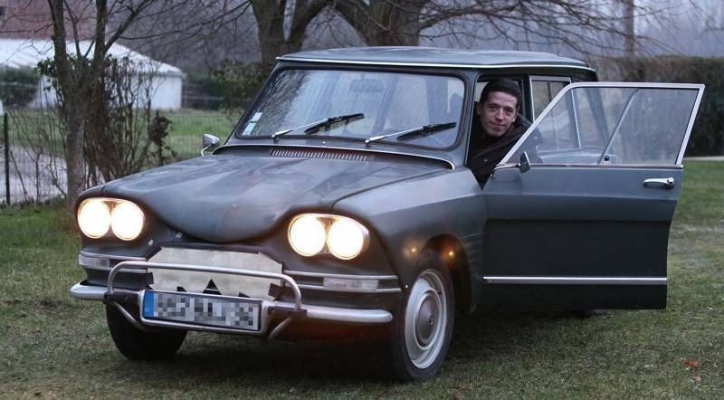

About Florian Quèze
Instantbird Guru
Email: flo@instantbird.org
IRC: flo (or fqueze or florian)
Short bio
- French
- Studied Computer Science
- Some Firefox work:
- 2004 - 2006 Several fixes on the Page Info dialog (Google Summer of Code in 2006)
- intern at Mozilla Corporation in Mountain View (2007 - 2008), worked on Firefox 3
- Started the Instantbird project in 2007.
Short bio (unrelated to Instantbird)
- Interested in Human Computer Interactions, psychology, ...
- Currently studying sociology
- Loves some old French cars, and owns a car that is almost twice as old as he is:
